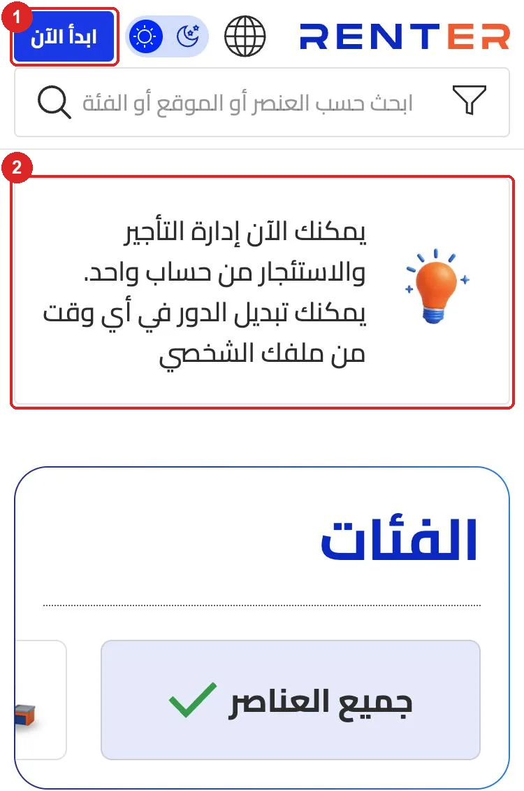
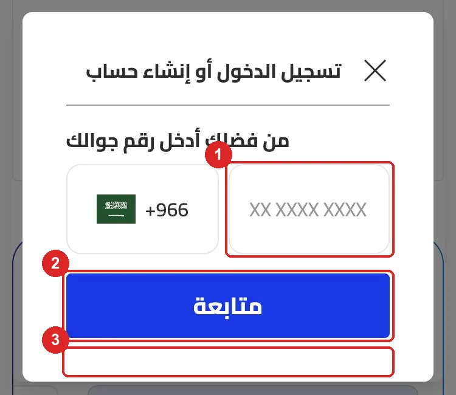
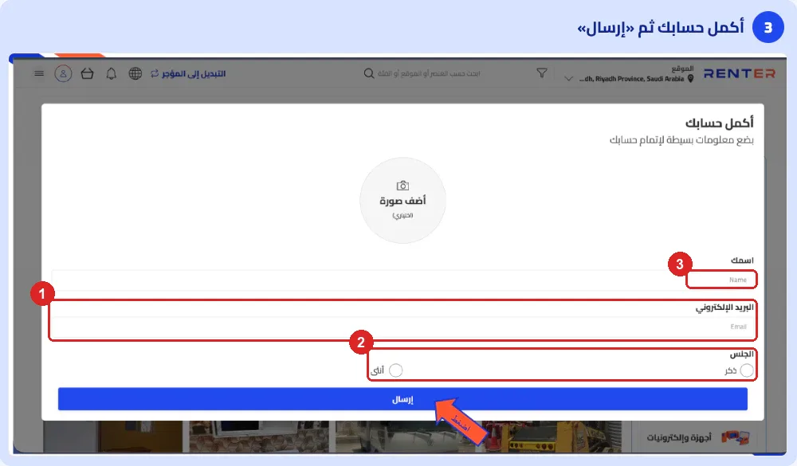
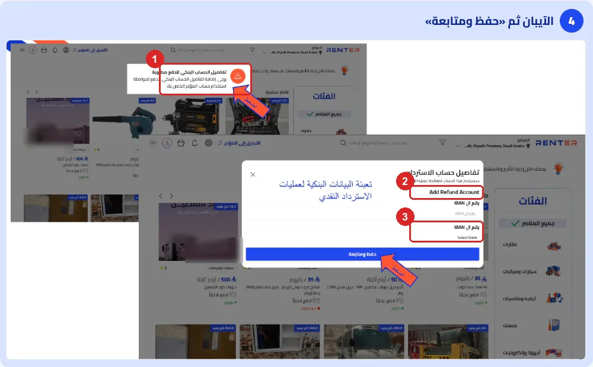
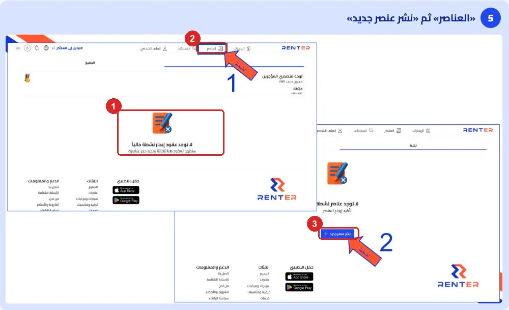

Renter × TMD · Promise P6 · checked live Nov 8, 2026
The steps below are what a Haraj merchant meets today, in order, after our WhatsApp message.
The table below lists each screen in order. Screens 1 and 2 were checked live on Nov 8. We stopped at the code step so as not to create a test account. Screens 3 to 15 come from Renter's own lessor guide screenshots, published on the blog on Nov 1.
| # | Screen | What the merchant must do | Friction |
|---|---|---|---|
| 1 | Home, «ابدأ الآن» | Find the button | No lessor wording anywhere on the page |
| 2 | Phone number | Type the number, tap «متابعة» | Full text keyboard, not a number pad. The mask shows 10 digits (XX XXXX XXXX), so it is not clear whether to type the 0. An empty tap shows no message. No terms link, no "free" note, no help link |
| 3 | Code (OTP) | Type the SMS code | Not checked live |
| 4 | «أكمل حسابك» | Name, email, gender, optional photo | Email and gender are asked of every user. Placeholders are in English (Name, Email). Oct 22: this step hung on loading for a merchant, with a validation error on updateUser |
| 5 | «التبديل إلى المؤجر» | Find and tap the switch | The merchant must know the word "lessor" and that a switch exists |
| 6 | Bank alert | Tap the red alert | The lessor account is blocked until an IBAN is saved |
| 7 | IBAN and bank | IBAN, bank, «حفظ ومتابعة» | Titled "refund account", with English text (Add Refund Account, Select Bank). Both fields are labelled IBAN. Bank data before any item feels unsafe to a new merchant |
| 8 | Lessor dashboard | Tap «العناصر» | Opens on Rentals: "no active contracts", with no publish button |
| 9 | Items | Tap «نشر عنصر جديد» | The publish button is 2 taps deep, inside an empty state |
| 10 to 14 | New item: category, name and text, photos, price and deposit, extras, availability, delivery | Fill 7 steps | Long, but each step is clear. Oct 27: photo upload hung for about an hour for a bus merchant |
| 15 | «تحقق من عنصرك» | Tap «نشر العنصر» | None |
These are questions merchants sent in reply to our WhatsApp messages between Oct 10 and Nov 3. Each one matches a screen in the table above.
Public reviews on Google Play in Saudi Arabia (3.7 stars, 71 reviews) say the same things: sign-in is complicated, the app is not in Arabic, and the language button sits behind the Android navigation bar.
The table below lists each change, the owner and the check that closes it. Numbers 1 to 4 remove the points where merchants stop today.
| # | Change | Owner | Done when |
|---|---|---|---|
| 1 | Never hang without a message. When updateUser or a photo upload fails, the backend returns which field failed, and the app stops the spinner and shows it in Arabic with a retry button. Check whether the Oct 22 failure came from the email or gender rule. | Jan, Kim | On a test account, an empty name, a bad email and a failed photo each show an Arabic message within 10 seconds. No spinner runs longer than 15 seconds. |
| 2 | Publish first, bank details later. Let a new lessor add and publish items with no IBAN. Ask for the IBAN when the first booking request comes in, before any payout, and call it "where we send your money" (حساب استلام أرباحك), not "refund account". | Jan, Kim, Paulo | A new account reaches «نشر عنصر جديد» without an IBAN. The IBAN screen appears on the first booking, in Arabic only. |
| 3 | A lessor door on every home screen. Add a second header button, «أجّر منتجك», on web and app. It works when logged out: phone, code, then straight into step 1 of a new item, already in lessor mode. No separate switch. | Paulo, Kim | From the home page, logged out, 1 tap opens the phone screen, and after the code the merchant is on the category step. |
| 4 | A landing page for WhatsApp merchants (flow below), and an app link that opens that flow, not the renter home page. On a computer, the link opens the web page, not the App Store. | Paulo, Kim, TMD content | The WhatsApp link opens the landing page on web and the lessor flow in the app, with utm_source=whatsapp kept to sign-up. |
| 5 | Count every step. Send GA4 and Adjust events: signup_start, otp_sent, otp_verified, profile_saved, listing_start, listing_published, with the source. | Paulo, Kim | A GA4 funnel shows how many WhatsApp visitors reach each step, for one full week. |
| 6 | Ask less on «أكمل حسابك». Name only. Make email optional and remove gender, or move both to the profile. Arabic placeholders. | Jan, Kim, Paulo | The step has 1 required field and saves with no email. |
| 7 | A clear phone field. Number pad (inputmode="numeric", autocomplete="tel"), mask 5X XXX XXXX, accept 05 or 5, an Arabic message for an empty or short number, and one line under the button: free, terms link, help on WhatsApp. | Paulo, Kim | On a phone the number pad opens, "0501234567" and "501234567" both pass, and an empty tap shows a message. |
| 8 | Put publish where the merchant looks. A lessor with 0 items opens on Items, with one large button «انشر أول إعلان». The Rentals empty state gets the same button. | Kim, Paulo | A new lessor sees the publish button on the first screen of the dashboard. |
| 9 | Arabic everywhere. Translate the bank screen (Add Refund Account, Select Bank, the second IBAN label is the bank), all placeholders, and both store pages. Move the Android language button above the navigation bar. | Kim, Paulo, TMD content | No English text on any Arabic sign-up or listing screen. Both store pages have an Arabic description. |
| 10 | Trust signs at the start. On the landing page and the phone screen: commercial registration, the support number 0115003615 and WhatsApp, the 3% fee in plain words, and how payouts work. | TMD content, Paulo | Each item shows on the landing page and the phone screen. |
| 11 | One link in the WhatsApp message. Send only the landing page link, and the 3 steps in one short message. Keep "reply here if you get stuck". | TMD content | The message has 1 link, and fewer replies ask "how do I register" over 2 weeks of sends. |
The flow below is the short path we suggest for merchants who come from WhatsApp. It needs changes 2, 3, 4 and 6. Suggested address: renter.net/ar/lessors/.
Description, deposit, extras and exact hours stay in the item edit page, so the merchant can add them after the first item is live.





Run these checks on a phone that has never signed in to Renter, once changes 1 to 4 are live.